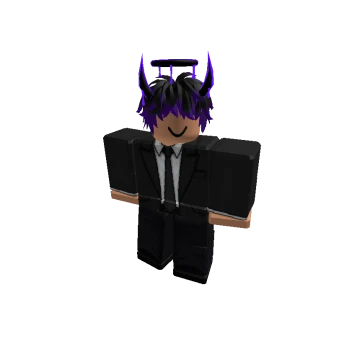
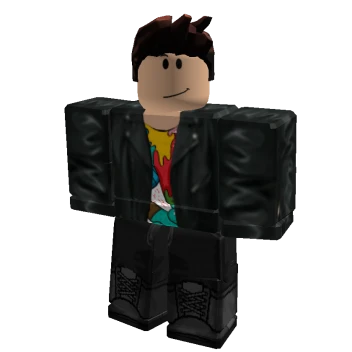

Skład Państwowej Komisji Wyborczej
Poniżej przedstawiamy osoby, które na co dzień dbają o transparentność i prawidłowy przebieg procesu wyborczego w Polsce.

Paweł Antoni Peza
Przewodniczący Państwowej Komisji Wyborczej
Doświadczony prawnik z wieloletnim stażem w administracji publicznej. Absolwent prawa Uniwersytetu Warszawskiego. Odpowiedzialny za nadzór nad wszystkimi procesami wyborczymi i referendalnymi w kraju.

Jakub Kowalczyk
Zastępca Przewodniczącego Państwowej Komisji Wyborczej
Zawodowy prawnik. Wspiera Przewodniczącego w organizacji i cyfryzacji procesów wyborczych.
Elżbieta Pawłowicz
Zastępca Przewodniczącego Państwowej Komisji Wyborczej
Ekspert w zakresie prawa konstytucyjnego i procedur wyborczych. Odpowiada za aspekty prawne i legislacyjne działalności Komisji.